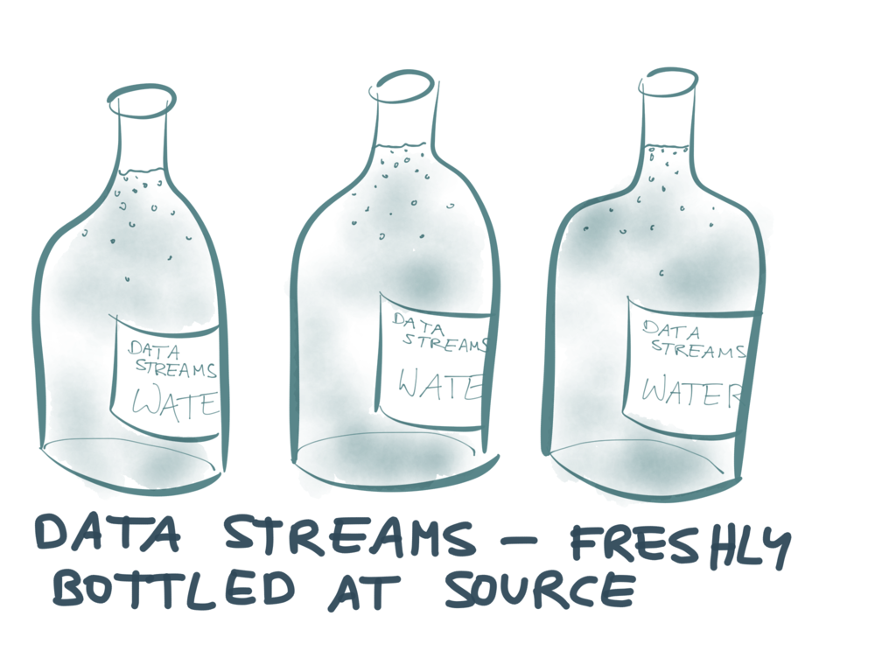

Bottled Water-PostgreSQL与 Kafka的实时数据整合
版权声明：
欢迎转载本站的所有内容，本站的所有文章使用知识共享署名-非商业性使用-相同方式共享 3.0 Unported许可协议，唯一的要求就是保留署名权，请在转载时注明出处。
Bottled Water: PostgreSQL与 Kafka 的实时数据整合
英文版： Bottled Water: Real-time integration of PostgreSQL and Kafka
中文版：
Bottled Water: PostgreSQL与 Kafka 的实时数据整合
写数据库相对容易，读数据库则异常困难。当然，如果你只是查询数据库，拿到一部分值，也还行。但如果你想要将整个数据库中的数据复制到其他系统中去，比如使用Elasticsearch来
做索引，做快速的pre-fill缓存，或是将数据导入到一个数据仓库供统计分析，或是迁移到其他类型的数据库中。
如果数据不会发生变更，实现起来也很简单。只需要一份数据库的快照(通过备份dump整个数据库)，复制然后载入到其他系统即可。但问题是如果数据库是持续变更的，
在你载入数据的时候快照中的数据已经不是最新的，即使你采用每日一次快照的方式，在下游系统中你只能拿到滞后一天的数据，对于数据量大的数据库而言，快照和大数据量的加载（bulk load
本身成本就很高。
从一个数据库复制数据到另外的系统中有哪些解决方案呢？
- 1、第一种是系统实现双写“dual writes”。每当系统进行数据库的写操作的时候，同时更新/校验缓存条目，对搜索引擎的数据重新索引，将数据发送到用于统计分析的系统等等

然而之前我就谈到,双写的方法其实是有很多问题的，主要是Race Condition(也叫做资源竞争)和可靠性的方面。如果稍有差异的数据写到2个不同的数据库中，数据库的内容会慢慢的相差甚远，随着时间的推移会变得越来越不一致。
要想从这样的渐进式的数据损坏中恢复是很困难的。
- 2、CDC 变更数据捕获
如果是从数据库的快照中重新构建缓存或索引，这样做的好处在于从新的数据库备份中重新构建时会消除任何的不一致性。但对于大型数据库而言，每天要处理整个数据库备份速度太慢，效率太低，怎么样才能提速呢？
典型的，不同的快照之间数据库只有一小部分会发生变化。如果你只是处理自上次快照之后数据库中发生的那些变更？这样只用处理一小部分数据，也可以频繁的进行比对。比如说每分钟比对一次，每秒比对一次？1秒100次呢？
当比对频率达到极限的时候，数据库的变更就变成了stream流。每次写数据库时，也就是流中的一条消息。如果你把这些消息严格按照原来数据提交时的顺序应用到数据库上，你就可以得到一份和数据库一模一样的副本，这其中的原理也就是数据库复制的原理
复制的方法来保持数据同步比双写的方法要好一些。首先，你只需要写一个数据库。然后从数据库中拿到2个东西：
1、某时刻下满足一致性的快照
2、自那个时刻之后的实时的变更流
你可以将快照导入到其他系统(比如搜索索引或缓存)，然后持续的应用这些实时的变更。如果管道是警告调优的，那么你的延迟可能低于1秒，下游系统也可以保持尽可能最新。由于变更流本身包括了写的顺序，资源竞争就不再是问题
这种方法常常称为变更数据捕获,目前现有的一些工具都不是很好用。但在一些公司里，CDC已经成为了系统构建的关键模块，比如Linkedin有Databus。Facebook有Wormhole
CDC 变更数据捕获能够让你释放你已有数据中的价值。你可以将数据“喂”给一个中心式的数据流
这样就可以实时与来自其他数据库的数据或时间流整合起来。这种方式使得新的数据分析或新的数据格式试验更加容易，允许你以一种最小化的风险渐进式地从
一个系统迁移到另一个系统，也比 data corruption更加健壮，如果出了任何问题，你都可以很快的利用快照和流恢复数据库。

获取实时的变更流
获取数据库的一致性快照是一个通用的特性，因为你需要利用它进行备份。但获取实时的变更流是传统数据库一直忽略的一个功能。
Oracle GoldenGate, the MySQL binlog, the MongoDB oplog or the CouchDB changes feed 都是类似的功能，但要想用好都不是那么容易。近来一些数据库如 RethinkDB or Firebase 正在朝着实时变更流的方向努力。
这里我们主要看看PostgreSQL. 它是一个很古老的数据库，但是很好用，很稳定、性能不错，也拥有绝大多数的功能。
以前你如果想从Postgres中拿到变更流你必须使用触发器。这样是可以实现，但fiddly，需要变更schema，且性能不大好。但去年12月份发布的Postgresql 9.4引入了一种叫 logical decoding逻辑编码的新特性，
有了logical decoding之后,Postgres的变更数据捕获突然变得更加吸引人。因此，当发布了这一功能之后，我立即利用这一特性开始为Postgres构建一个变更捕获工具Confluent赞助了我这个项目，目前我们发布了一个alpha的开源版本 Bottled Water.

Bottled Water简介
Logical decoding利用了数据库的write-ahead log (WAL),能够让我们访问行级别的变更事件：每次一张表的某一行出现插入、更新删除操作。这类事件是利用事务来分组的，是以它们提交到数据库的顺序出现的。流中并不会记录Aborted/rolled-back事务。因此，如果你以同样的顺序应用这些变更事件，就能得到一个与数据库的事务保持一致的副本。
Postgres logical decoding 的设计是很精巧的：利用变更流能够构建出一个一致性的快照来。你可以使用快照来做整个数据库某个时间点的备份，无需锁库即可完成备份，然后通过变更流获取所有自快照之后发生的写操作。
Bottled Water 利用这些特性来复制数据库中的所有数据，将数据编码成 Avro format格式.然后把编码后的数据发送给Kafka — 数据库中的每张表作为一个Kafka topic,数据库中的每一行作为Kafka中的一条消息。
一旦数据导入到Kafka里面,你可以按你所需来编写Kafka consumer that does whatever you need:发送数据给Elasticsearch, 生成一份缓存，在 Samza job中进行处理, 利用Camus将数据导入到HDFS with … 等等
为什么选择 Kafka?
Kafka 是一个消息系统，以大量事件的传输闻名，诸如web服务器日志，用户点击事件。在Kafka里,此类事件通常保留一段时间然后就丢弃掉。 Kafka是否真的适合数据库的变更事件。我们不希望丢掉任何的数据库数据。
事实上， Kafka 是不二之选— 最关键的是Kafka’s log compaction feature, 简直就是为了这个目的量身定做的. 如果你启动log compaction,就不会存在按照时间对数据进行丢弃。相反，每个消息都有一个key，Kafka会无限保留某个
key对应的最新的消息。某个key值之前的消息最终通过garbage-collected来采集。这与key-value键值数据库中使用新的值覆盖旧的值是一样的道理。
Bottled Water确定了 (or replica identity)Postgres中每张表的主键，并将其用作发送给Kafka消息的主键。消息值取决于事件的类型：
- 对于插入和更新操作，消息值包含了每行所有字段的值，编码成Avro格式
- 对于删除操作，消息值为null。这样 Kafka 就会在 log compaction时移除消息,这样就释放了磁盘空间
通过log compaction,你不再需要一个系统来存储整个数据库的快照，用另一个系统来处理实时的消息-二者可以在同一个系统中并存。
Bottled Water把最开始的快照按照数据库中每行作为一个消息发送给Kafka，主键作为消息的key，发送给所有Kafka brokers.当处理完了快照，插入的、删除的或更新的每行都被转换成一条消息。
如果某一行频繁更新的话，同一个key就会存在多条消息(每次更新都会产生一条消息)。所幸的是，Kafka’s log compaction会对其进行排序，对以往的值进行garbage-collect处理，这样就不会浪费磁盘空间。另一方面，如果某一行从不更新或删除，在Kafka中也再也不会发生变化，-永远不会进行 garbage-collected.
整个数据库的备份和实时流位于同一个系统中是很有益处的。如果你想从头开始构建一个下游的系统，你可以从一个空的数据库开始，慢慢consuming Kafka topic，浏览所有的topic, 将每一条消息写入到你的数据库当中。完成之后，你便得到了整个数据的最新副本。另外，你可以通过不断的消费流数据来保持最新。给原有的数据做一些新的视图相当之容易。
用Kafka的方式来维护数据库的副本给熟悉传统的企业消息和局限性的人带来了诸多惊喜。事实上，这个应用场景也正是为什么Kafka是基于 replicated log abstraction所构建的:它使得这样一类大规模的数据data retention and distribution 保持和分发成为了可能。下游系统可以自己的意愿重载和重新处理数据，不会影响要求低延迟查询的上游数据库的性能。
为什么选择 Avro?
从Postgres抽取的数据可以编码成JSON, or Protobuf, or Thrift,或其他任意格式. 但是，Avro才是最佳选择。Gwen Shapira 曾经撰文讨论了Avro在schema management中的优点，我也写过一篇 Avro 与Protobuf and Thrift比较的文章 .Confluent流数据平台指南 stream data platform guide中给出了为什么Avro 适合于数据集成的若干理由。
Bottled Water首先检查数据库表的schema，自动为每个表格生成Avro schema，利用Confluent’s schema registry对schema进行注册,将schema的版本嵌入到Avro中
以消息的形式发送给Kafka。也就是说是于流数据平台serializers一起使用:你可以将Postgres中拿到的数据以有价值的业务对象和丰富的数据类型来使用，无需编写大量的解析代码。
Postgres datatypes 到 Avro的转换已经基本上很全面了，涵盖了所有常见的数据类型，提供了一种lossless and sensibly的类型转换。后续我打算对其进行扩展以支持所有Postgres内置的数据类型-虽然工作量很大，但是是值得的，因为一个好的schema对于数据是相当重要的。

logical decoding输出插件
Postgres’ logical decoding feature的一个有趣之处在于说它并没有定义一种wire format来表示在网络中如何传输变更数据。相反，它定义了output plugin API, 其中对于每一次插入、更新或删除都会收到一个函数调用。 Bottled Water使用这个API来读取数据库内在格式的数据，并将其序列化成Avro格式。
由于 Postgres 扩展机制的原因，输出插件必须用C来编写，并且以共享库的形式导入到数据库服务器中去。这里要求使用超级用户的权限和数据库服务器的文件
访问权限，所以并不是很容易就完成的。这里我理解很多数据库管理会被在数据库服务器上运行自定义代码所吓到。不幸的是，这是目前能够使用logical decoding的唯一方式
所幸的是，你无须在主数据库中安装该插件-你可以使用从属机(replica, hot standby).这样你就能保证该插件不会损坏你的数据，引起主数据库的崩溃或影响其性能。

client daemon
除了数据库服务器上运行的插件之外, Bottled Water还包含了一个你可以在其他地方运行的客户端程序。它能够连接Postgres 服务器，能够连接 Kafka brokers，接收来自数据库的Avro格式编码的数据，将Avro数据推送给 Kafka。
客户端是使用C编写的，是因为这样使用Postgres 的客户端库文件的最简单的方式，由于客户端和插件之间一部分代码是复用的，相当轻量级，且无须写到磁盘中。
如果客户端发送崩溃，与Postgres or Kafka的连接发生中断会有哪些影响?完全没影响。它会跟踪那条消息已经发布过了，那条消息Kafka brokers已经确认过了。
当出错之后重启客户端时，它会重新发送哪些没有确认过的消息。因此Kafka 中一些消息可能会出现2次，但不会有数据丢失。
相关工作
其他人解决同样问题所做的工作:
- Decoderbufs是一个试验性的Postgres plugin by Xavier Stevens，将变更流转换成Protocol Buffers 格式.它只是提供 logical decoding plugin —并不包括一致性快照或客户端的部分 (Xavier提到他以前写过一个客户端，读取Postgres中的数据写到Kafka,但目前还不是开源的).
- pg_kafka (同样是Xavier写的) 是一个Postgres函数形式的Kafka producer client，你可以使用触发器来生成数据给Kafka
- PGQ 是一个基于Postgres的队列实现， Skytools Londiste (developed at Skype)使用它来做基于触发器的复制。 Bucardo是另一款基于触发器的复制器。就我理解基于触发器的复制是有些黑客味道的(相当有技术含量)，
要对schema进行变更，需要fiddly的配置，要承担巨额的花销。另外，这些项目似乎都没有得到PostgreSQL core team的认可,而 logical decoding is fully supported. - Sqoop 最近增加了支持writing to Kafka. 就我所知，Sqoop只能利用数据库的完整快照，无法捕获持续的流数据，同样也无法保证不同快照之间的事务一致性
- 对于MySQL, James Cheng整理了从MySQL into Kafka的change capture projects的列表，这些项目主要围绕着binlog的解析，并没有做一致性快照的部分、
Bottled Water目前的状态
目前, Bottled Water只是一款alpha的软件.充其量也就是个概念验证— 虽然经过了详细的设计和实现—但仍未在现实世界的系统中得到测试。现阶段还不适合在生产系统中使用，但经过一些测试和调整，希望将来能用在生产系统之中。
我们将其以开源的形式发布出来是希望能够得到社区的反馈。同时，知道我正在完成这个项目的人一直在帮我测bug。
README 包含了如何入门的更多信息。